透過將男性肉身強制置入「被觀看」的陰柔歷史模具中，本作品是一場解剖當代凝視暴力、權力置換與自我物化的錄像空間實驗。
- 擔任
- 燈光音像互動、3D建模、空間設計
- 工具
- Arduino、TouchDesigner、LED、Blander
- 演出
- 臺北藝術大學
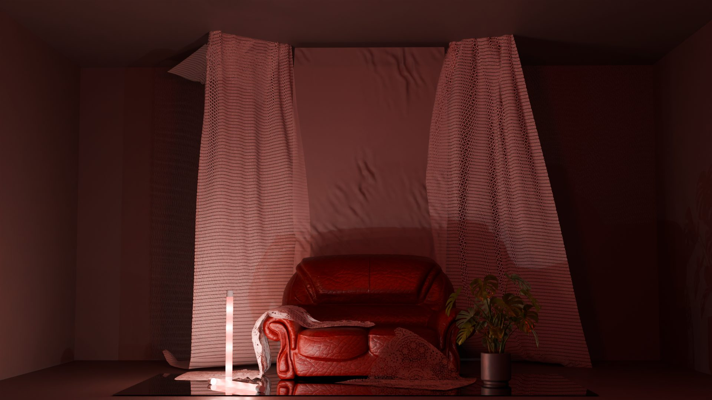
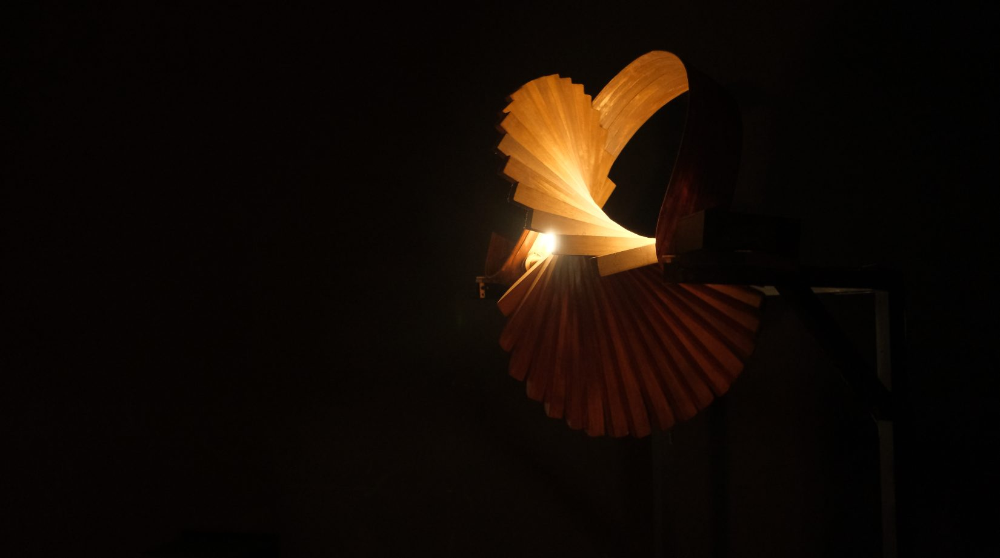
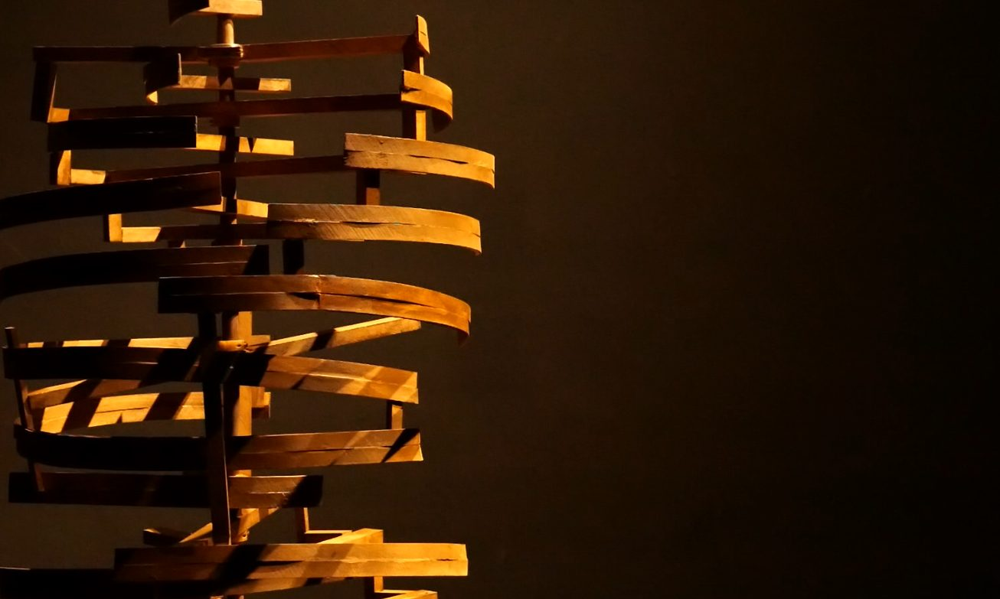
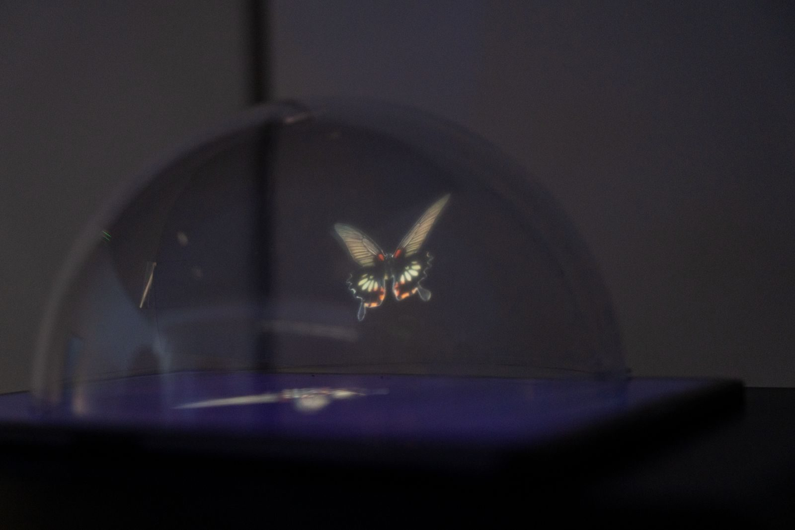
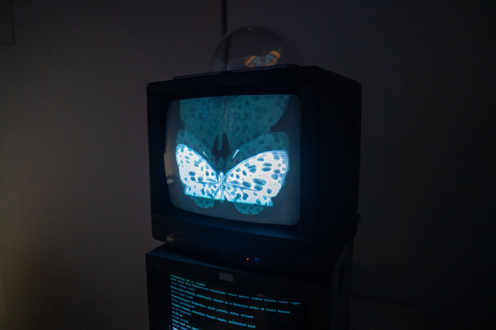
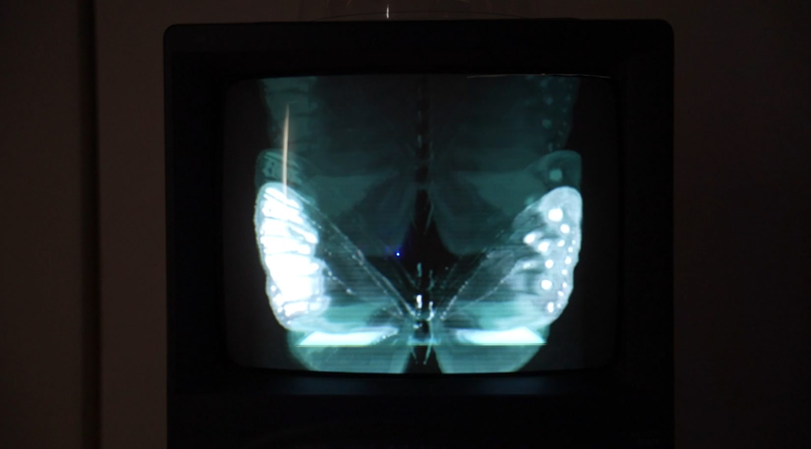
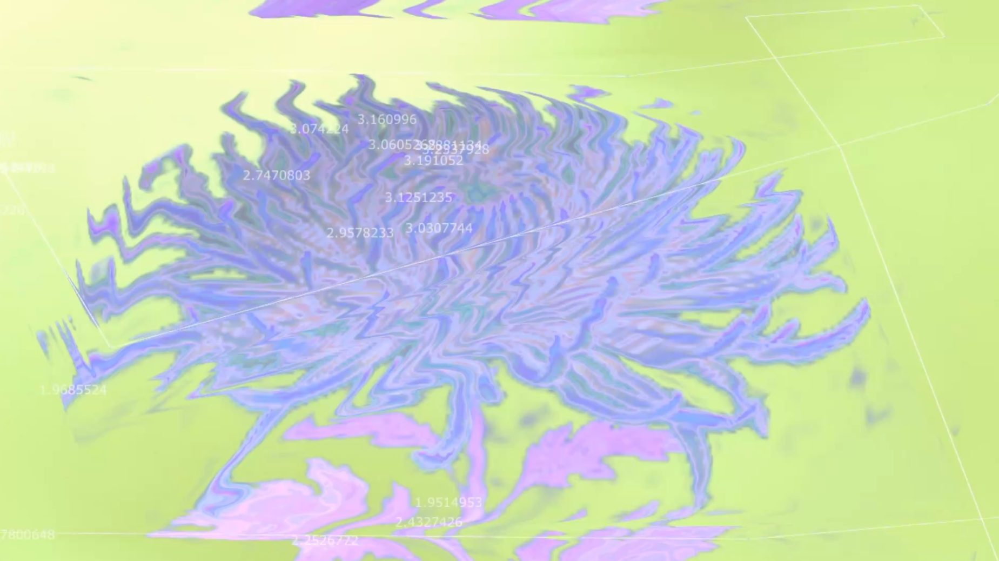
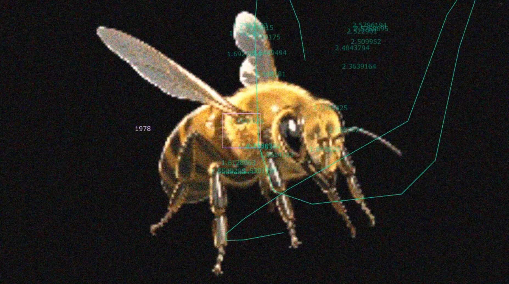
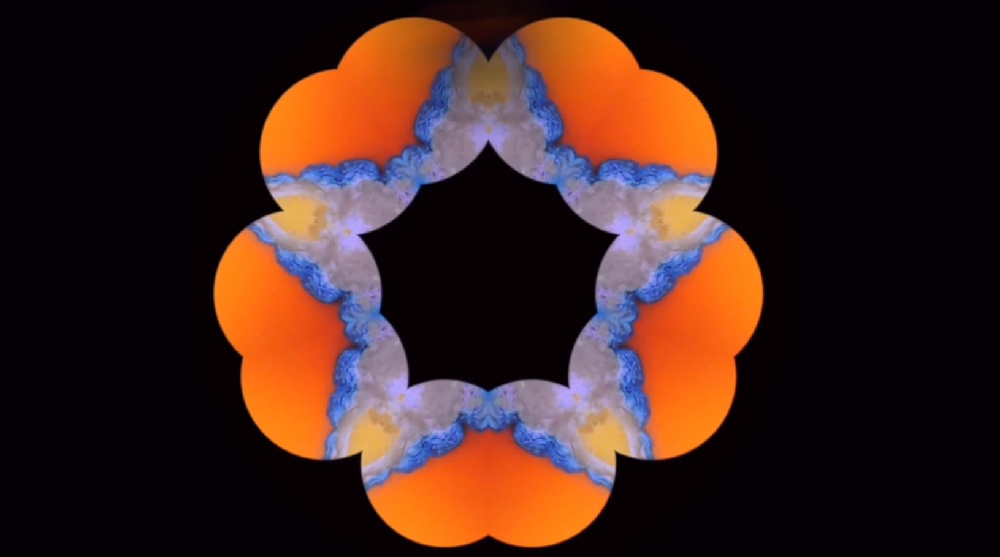
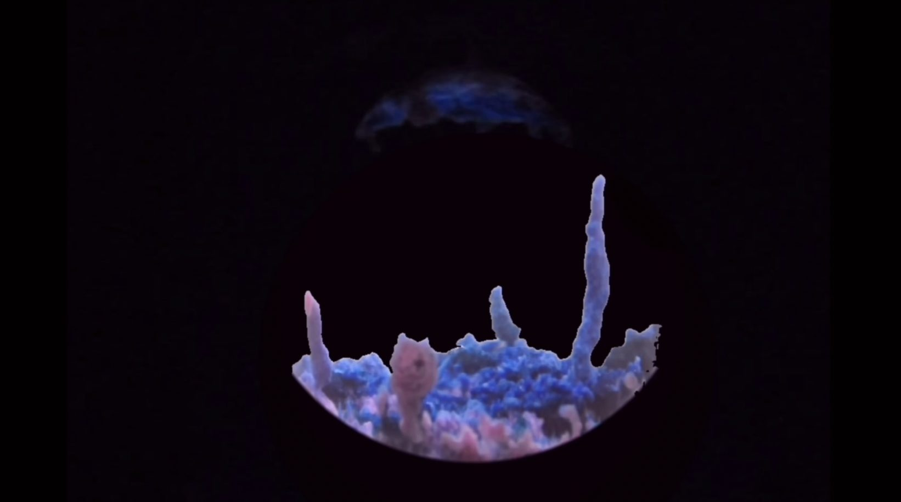
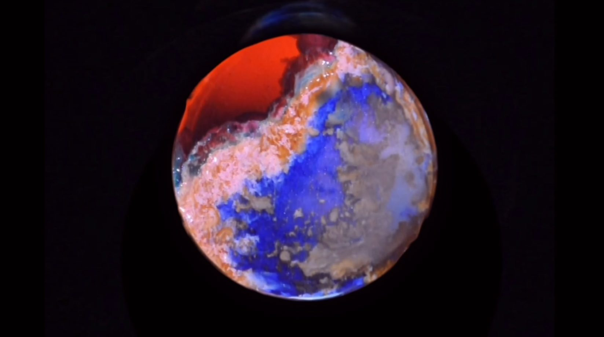
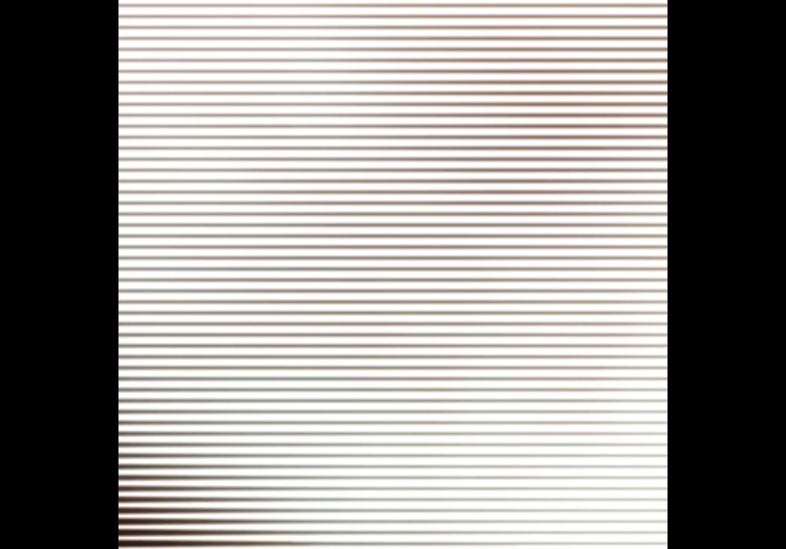
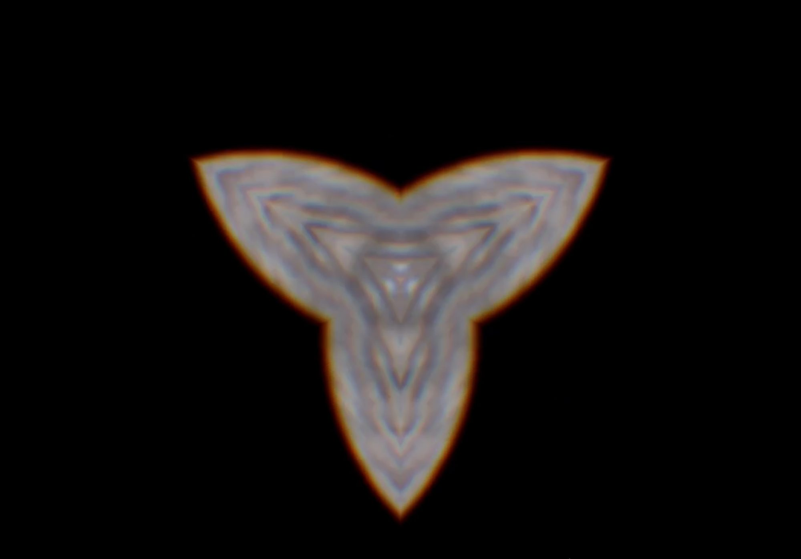
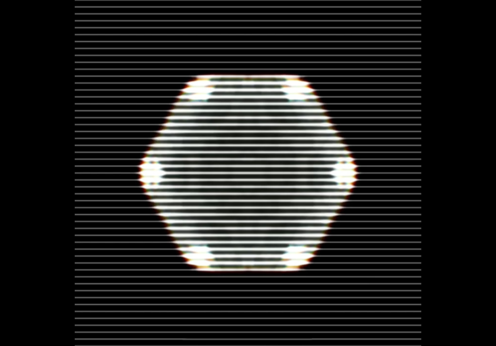
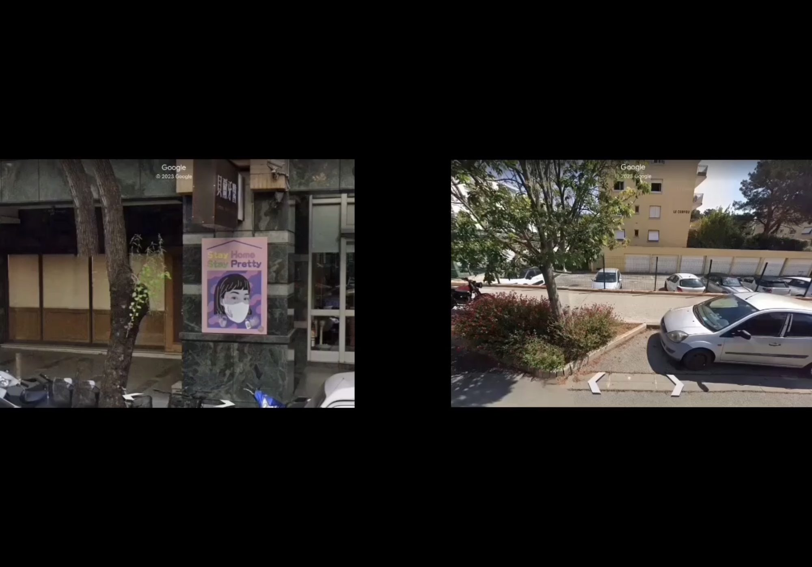
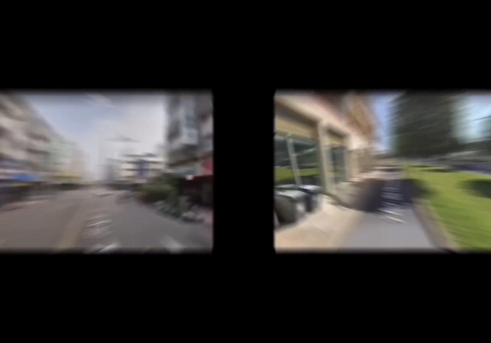
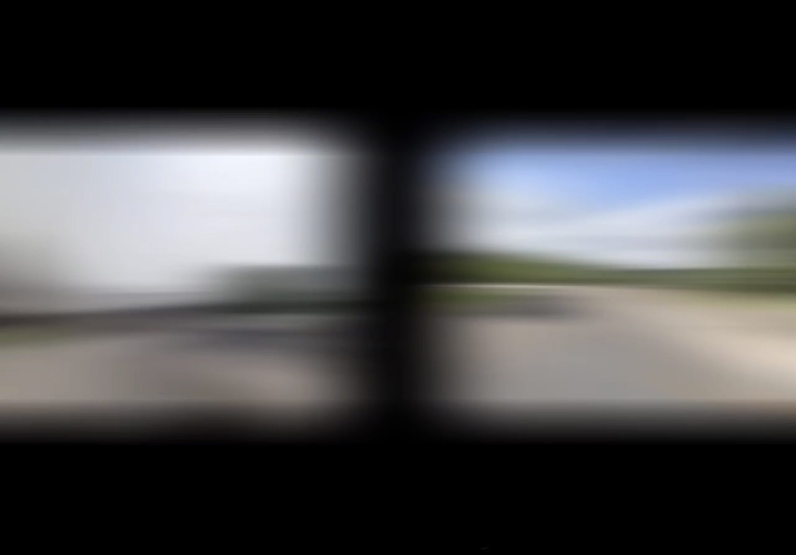
透過將男性肉身強制置入「被觀看」的陰柔歷史模具中，本作品是一場解剖當代凝視暴力、權力置換與自我物化的錄像空間實驗。
透過 24 條木條的排列與堆疊，結合光影的交錯與變化，構築層次豐富的光線表情。藉由馬達運轉所產生的聲響，讓靜態的結構與動態的感官經驗相互交織，賦予雕塑如同生命般的律動與存在感。
透過木材層層堆疊與交錯，構築出充滿想像與未知的空間場域。藉由結構所形成的層次與縫隙，引導觀眾自由穿梭、探索，在行走與觀看之間，發掘空間中不同的感知體驗。
透過影像紀錄與蝴蝶標本的採集、製作及保存，捕捉生命形態的短暫變化，將稍縱即逝的生命歷程轉化為可被凝視與研究的物質紀錄。
單頻道轉三頻道，控制音樂與影像的即時互動
透過門縫作為觀看世界的媒介，窺探台灣與法國日常生活中的文化差異，從生活習慣、空間使用到社會氛圍，捕捉不同文化背景下所呈現的生活樣貌。
透過化學物質的視角，窺探微觀世界中生命的生成、演變與消逝，描繪物質之間無聲卻持續發生的興衰與更迭。
所有的事物被放到最大，就像從清晰到模糊，再從模糊到元素，他們只是剛好的被拼在了一起，原來他們都只是分子。 我利用我的畫作，透過攝像頭將畫不斷的放大放大放到最大，比擬出分子的感覺。
利用Google地圖將「距離」減去形成扁平化的影像，創作的起點只是對比台灣跟法國的大眾審美在街景的呈現。最終形成均值化的模糊影像，意味著在網路與全球化的情境之下，場域與距離的關係變得曖昧模糊，而通往追求藝術的途徑或許只是風景不同但最終到達相同的境地。
我就讀國立台北藝術大學新媒體藝術系,主要學習燈光、裝置與影像創作/合作:為演出設計燈光、投影與即時互動系統,也自己寫程式、焊電路。
我喜歡乾淨、準確、不多餘的東西。系統在舞台上應該像燈光一樣,觀眾感覺得到效果,看不到機器。